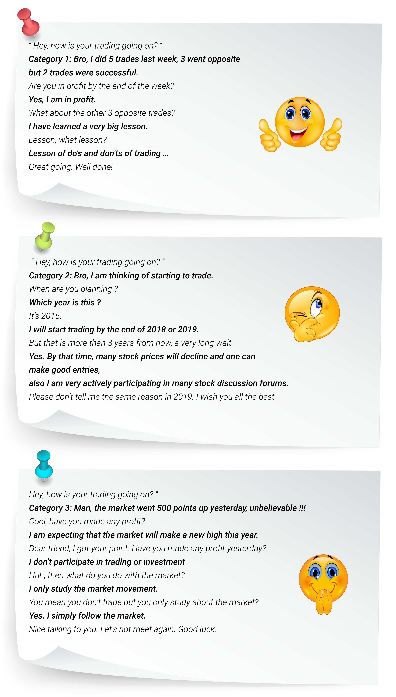

A wise man said once, there are 3 kinds of people in the world,
1. People who make things happen
2. People who watch things happen and
3. People who wonder what happened
The same types of people exist in the stock market as well. You will come to know about them
if you ask them a very simple question,
1. People who make things happen
2. People who watch things happen and
3. People who wonder what happened
The same types of people exist in the stock market as well. You will come to know about them
if you ask them a very simple question,

Highly recommended for you to follow category 1. Be a doer who takes action. Instead of thinking about starting a trade or investment for a very long time ( category 2 ) or simply showing the excitement over the market ( category 3 ), the better option would be to do a few simple trial trades. You can at least buy 1 share of any company, not looking to make a huge profit but for taking the initial steps in trading or investment. Doing the real trade adds some values to your thought. It’s all about taking action, then refining your action in the right place at the right time during the journey.
It sounds nice to follow a doer, but things will start changing when the reality hits. Say, you blindly bought a stock with a huge expectation, and luckily the stock moves in your direction. The stock may give you a small profit, probably very little profit. By this time, your confidence gets boosted up. Then you start to keep buying the same stock again and again in bigger quantities because you are expecting that the same stock will generate good profit.
It sounds nice to follow a doer, but things will start changing when the reality hits. Say, you blindly bought a stock with a huge expectation, and luckily the stock moves in your direction. The stock may give you a small profit, probably very little profit. By this time, your confidence gets boosted up. Then you start to keep buying the same stock again and again in bigger quantities because you are expecting that the same stock will generate good profit.
Expectations alone drive you to the stock market.
It doesn’t mean that you don’t need to have any expectations. Expectations have a huge priority in our life. Often we express our feelings in daily life conversations with little expectations,
“ I expect CSK to win in this IPL season “
“ How can we expect this project to be done by the end of this month?“
“ I expected this film would be a box office hit “
“ I have a huge expectation on her to accept my proposal “
“ I am expecting that we will reach there on time “
Whenever we expect an outcome from something, we are simply projecting an immediate future. The actual result will be unknown at that moment. Even when you buy a stock for the first time, you are forecasting that the stock will go up and make a profit.
When people do their first trade, they will have only one view. The view is,
“ I expect CSK to win in this IPL season “
“ How can we expect this project to be done by the end of this month?“
“ I expected this film would be a box office hit “
“ I have a huge expectation on her to accept my proposal “
“ I am expecting that we will reach there on time “
Whenever we expect an outcome from something, we are simply projecting an immediate future. The actual result will be unknown at that moment. Even when you buy a stock for the first time, you are forecasting that the stock will go up and make a profit.
When people do their first trade, they will have only one view. The view is,
I bought the stock, somehow the stock will move in my direction and I will make a profit
This is a typical amateur point of view. Any stock which is trading in any stock exchange will have 3 different movements,
Bullish follows an upward trend, Bearish follows a downward trend and Sideways doesn’t have a proper trend rather very less movement on both sides. Amateurs will stick to only one movement which is the Bullish because they already bought the stock and expect it to move in their favor, but professionals will have 3 views about the market ( Bullish, Bearish and Sideways). Most of the traders or investors who want to make an entry, probably stay away from the sideways market because it won’t show any trend in the market.
And, why do some people live up to their potential, while others don’t even scratch the surface of success ?
The one thing which differentiates a professional from an amateusr is the time they spend to master the skill of trading or investment. The only way to become better at anything is to spend time working on it especially in the stock market journey. The group of so-called professionals practice something beyond their expectations called - Research or Market analysis.
Market analysis will help them to figure out the market trend. When the market follows the same trend for a long duration which refers to a specific name in the stock market called Trend Continuation. And anytime the market may change the direction of its trend which is known as a Trend Reversal. A trend can be either a Bullish trend or a Bearish trend.
And, why do some people live up to their potential, while others don’t even scratch the surface of success ?
The one thing which differentiates a professional from an amateusr is the time they spend to master the skill of trading or investment. The only way to become better at anything is to spend time working on it especially in the stock market journey. The group of so-called professionals practice something beyond their expectations called - Research or Market analysis.
Market analysis will help them to figure out the market trend. When the market follows the same trend for a long duration which refers to a specific name in the stock market called Trend Continuation. And anytime the market may change the direction of its trend which is known as a Trend Reversal. A trend can be either a Bullish trend or a Bearish trend.
We can redefine the market direction based on trend continuation and trend reversal. The stock movement or the market movement can be any one of these combinations :-
1. A trend continuation for a very long time
2. A trend continuation, then a trend reversal and
3. No trend in the market
2. A trend continuation, then a trend reversal and
3. No trend in the market
“ Why is there a difference in those movements? “
“ Which difference are you referring to? “
“ It’s about the market movement and stock movement? “
“ Market movement is the general way of analyzing the overall market. “
“ Then, what about the stock movement? “
“ The word stock movement refers to the very specific trend of one particular stock “
“ Which difference are you referring to? “
“ It’s about the market movement and stock movement? “
“ Market movement is the general way of analyzing the overall market. “
“ Then, what about the stock movement? “
“ The word stock movement refers to the very specific trend of one particular stock “
The market will move in the same direction if there is a trend continuation. But the trend reversal drives the market in the opposite direction. Market is very dynamic, at any time the trend may continue or it may reverse the market direction. Instead of simply having expectations about the market, it is better to identify the Trend continuation or a Trend reversal. We need to find these 2 behaviors of a particular trend by doing our analysis.
But the question is,
But the question is,
How accurate are these analyses to find the trend behaviors ?
Can we expect one hundred percent success ?
What kinds of analysis exist in the market ?
Can we expect one hundred percent success ?
What kinds of analysis exist in the market ?
The answer to the first 2 questions will be a big NO. We can't expect one hundred percent accurate analysis for every movement in the
market. Each and every stock market analysis will find the highest probability of success and not the pristine one hundred percent
result.
But we have the answer to the third question. Yes, people do have various analyses to make entry and exit in various stocks. The two extremely popular analysis is,
But we have the answer to the third question. Yes, people do have various analyses to make entry and exit in various stocks. The two extremely popular analysis is,
Sounds like both analyses are the same but there is a huge difference in both the analyses.
For instance,
Let's take a stock from the real estate industry, RE Limited on which someone needs to do a detailed fundamental analysis. First and foremost, he will look at the strength of the specific industry which is Real Estate, then keep his eyes on its quarterly earnings, then financial reports, company products, management credibility, and some financial ratios analysis of RE Limited. A typical analysis of this kind is commonly known as Fundamental Analysis. Better we can avoid all the fundamental jargon and look into the role of a fundamental analyst.
A fundamental analyst must find an answer to a simple question,
For instance,
Let's take a stock from the real estate industry, RE Limited on which someone needs to do a detailed fundamental analysis. First and foremost, he will look at the strength of the specific industry which is Real Estate, then keep his eyes on its quarterly earnings, then financial reports, company products, management credibility, and some financial ratios analysis of RE Limited. A typical analysis of this kind is commonly known as Fundamental Analysis. Better we can avoid all the fundamental jargon and look into the role of a fundamental analyst.
A fundamental analyst must find an answer to a simple question,
Whether the stock is overvalued or undervalued ?
On what basis can he evaluate the stock, RE Limited?
The fundamental analyst should find a particular value as a result of his analysis which is called an intrinsic value of a stock. Anybody can say whether the stock is overvalued or undervalued if they know the intrinsic value of that particular stock.
The fundamental analyst should find a particular value as a result of his analysis which is called an intrinsic value of a stock. Anybody can say whether the stock is overvalued or undervalued if they know the intrinsic value of that particular stock.
Overvalued or Undervalued ? click here
If multiple fundamental analysts are finding the intrinsic value of the same stock( RE Limited ), there are chances every analyst may
get different intrinsic values because it’s all based on how they found the intrinsic value by their analysis. A group of people in the stock
market who does a similar kind of analysis by fundamentally evaluating a company commonly known as
To make the investor’s analysis easier, many automated software is available to evaluate a company in various benchmarks or even
find the intrinsic value with the help of a software. However, investors do fundamental analysis for a long term investment purpose.
Another group of people who will focus only on the price of a stock, nothing else matters to them. They are commonly known as,
If you get a chance to meet a professional trader, please ask a few fundamental questions.
“ Bro, do you care about the valuation of a stock? “
“ No, who cares about it. “
“ Do you follow any sort of background study on the company before a trade? “
“ I don’t have to. “
“ Huh, then how do you choose a stock? “
“ I primarily focus on the stock price and the trend, that’s enough for a trader. “
“ will you get everything from the stock trend? “
“ Yes, that’s what every trader is expecting. “
“ What sort of analysis do you follow? “
“ I analyze the historical data by technical analysis “
“ No, who cares about it. “
“ Do you follow any sort of background study on the company before a trade? “
“ I don’t have to. “
“ Huh, then how do you choose a stock? “
“ I primarily focus on the stock price and the trend, that’s enough for a trader. “
“ will you get everything from the stock trend? “
“ Yes, that’s what every trader is expecting. “
“ What sort of analysis do you follow? “
“ I analyze the historical data by technical analysis “
If a trader knows the trend of a stock, then the trade would be a cakewalk
From a trader's perspective, a trend will start from a support level and it ends at a resistance level, that’s how traders define a Bullish
trend. A bearish trend would have a good downward momentum starting from a resistance level and it ends at the nearest support
level. Both the trend movements are contradictory.
Support of a stock is typically a price range on which there will be a huge buying pressure where the resistance range will have a huge
selling pressure. Technical analysis finds several support and resistance areas in a stock, which is commonly noted as SAR of a stock.
SAR ( Support and Resistance ) of a stock
What if everybody knows the SAR level of a particular stock ?
Yes, it may be possible. Everybody knows the exact support levels and resistance levels of a particular stock, and the stock has reached a proper support level now. So everybody will buy the stock because the stock is trading at its support level. But we know that every seller is selling to a buyer and every buyer is buying from a seller. The question is, who will be the counterparty? which means who will have the opposite view, and who will sell the stock when the stock is trading at a support level. Without a counterparty, none of the trades would be executed and if there are no sellers at support level none of the buyers can buy the stock.
Here is the beauty of the stock market. Say, you are doing a technical analysis to find SAR of a stock with your skills and core competencies. But every trader has their core competencies and they are applying their logic to find the SAR. So the SAR of the same stock by multiple traders would have different support levels and different resistance levels. Your support level in a stock may not be the same support level of another trader. So definitely there will be counterparties and the trades will be executed. Adding on, many software are providing SAR levels from the real market and a large number of traders are using the software SAR levels.
Why do technical traders ask this question ?
“ Are these SAR levels strong or not ? “
Professional traders never make a buy entry at every support level because only a strong support level will push the market upward.
So the support level must be very strong to make a buy entry. Probably historical data analysis gives them a glimpse of a few strong
support areas.
The same logic will be applicable to resistance level, too, the resistance level must be strong. It’s not just about support and resistance,
it’s all about how strong the support to follow the uptrend and how strong the resistance to push the market down.
“ When do we use this word, respect along with SAR? “
“ It’s simple. Respecting the support means the market tends to move upward “
“ What about resistance? ”
“ If the market respects the resistance, the market will fall down “
“ What if the market doesn’t respect the support? “
“ If it doesn’t respect, the support is not strong enough to move the market upside “
Look at the stock RE Limited trading at 300 rupees.
There was a particular price range of RE Limited [ 280 to 290 ] that was very strong. Whenever the stock price comes down to this range of 280 to 290, it respects the support and the market will shoot upside from 280 price levels to 320, 340, 370, etc. Now we can say that the stock is under buyers control and it respected the support range. The same trend had continued for a couple of weeks.
After a couple of months, the stock was trading at different prices. RE Limited is trading at the price of 380 now.
For RE Limited,
[ 280 to 290 ] is the strong support level.
[ 385 to 400 ] is a strong resistance level.
“ It’s simple. Respecting the support means the market tends to move upward “
“ What about resistance? ”
“ If the market respects the resistance, the market will fall down “
“ What if the market doesn’t respect the support? “
“ If it doesn’t respect, the support is not strong enough to move the market upside “
Look at the stock RE Limited trading at 300 rupees.
There was a particular price range of RE Limited [ 280 to 290 ] that was very strong. Whenever the stock price comes down to this range of 280 to 290, it respects the support and the market will shoot upside from 280 price levels to 320, 340, 370, etc. Now we can say that the stock is under buyers control and it respected the support range. The same trend had continued for a couple of weeks.
After a couple of months, the stock was trading at different prices. RE Limited is trading at the price of 380 now.
For RE Limited,
[ 280 to 290 ] is the strong support level.
[ 385 to 400 ] is a strong resistance level.
“ Why SAR is not a single price? “
“ Sorry, Didn’t get you? “
“ I mean [ 280 to 290 ], why is it not just a single price like 280?
“ SAR within a price range makes sense than just a single price “
“ Any particular reason? “
“ Yes, mostly when the price reaches SAR level, it trades slightly sideways. Better to take the price range.”
“ Sorry, Didn’t get you? “
“ I mean [ 280 to 290 ], why is it not just a single price like 280?
“ SAR within a price range makes sense than just a single price “
“ Any particular reason? “
“ Yes, mostly when the price reaches SAR level, it trades slightly sideways. Better to take the price range.”
Do you think RE Limited will trade only in between the price range of [ 280 to 400 ] forever ?
We heard many stories about the stock market like,
“ My uncle bought a stock in 1990 at 50 rupees and now it is trading around 1000 rupees “
“ My friend bought a stock at 700 rupees and it is trading at 20 rupees now “
We are very familiar with such stories. History says that there is a possibility of stock movement from 5 rupees to 1000 rupees. Apply the same logic, the possible price movements of RE Limited would be,
1: It may break-out the resistance level 400 and make new high prices like 500, 700, or even 1000 rupees.
2: It may break-down the support level 280 and make new low prices like 200, 100, or even 20 rupees.
Please note down these words,
We heard many stories about the stock market like,
“ My uncle bought a stock in 1990 at 50 rupees and now it is trading around 1000 rupees “
“ My friend bought a stock at 700 rupees and it is trading at 20 rupees now “
We are very familiar with such stories. History says that there is a possibility of stock movement from 5 rupees to 1000 rupees. Apply the same logic, the possible price movements of RE Limited would be,
1: It may break-out the resistance level 400 and make new high prices like 500, 700, or even 1000 rupees.
2: It may break-down the support level 280 and make new low prices like 200, 100, or even 20 rupees.
Please note down these words,
Break-Out happens when there is a huge buying pressure in the stock and the stock will break the immediate strong resistance and
make a new high. We can come up with a conclusion saying that a strong resistance cannot be a resistance forever. Any strong
resistance will be broken out at any time. Break-out is necessary for a stock to move upward. The logic of break-out is the same for
every stock listed in the stock exchange.
Break-Down is exactly the opposite process of breakout. The stock will fall heavily if there is a huge and continuous breakdown, often people say that the stock has crashed drastically.
Let’s rephrase the movement of a stock based on Break-out and Break-down.
For RE Limited,
It made a new high price of 550 because it broke-out the resistance level [ 385 to 400 ].
It made a new low price of 100 because it broke-down the support level [ 280 to 290 ].
Break-Down is exactly the opposite process of breakout. The stock will fall heavily if there is a huge and continuous breakdown, often people say that the stock has crashed drastically.
Let’s rephrase the movement of a stock based on Break-out and Break-down.
For RE Limited,
It made a new high price of 550 because it broke-out the resistance level [ 385 to 400 ].
It made a new low price of 100 because it broke-down the support level [ 280 to 290 ].
Every Break-out will create new support and every Break-down will create new resistance
Every support and resistance level of any stock will be broken someday in the future. If there is a continuous strong break-out in a
stock, after every break-out it will create new support levels and the stock keeps moving upward for a long time. Continuous strong
break-out is one of the technical reasons that some stocks had moved from 5 rupees to 1000 rupees. On the contrary, every strong
break-down will create new resistance levels, and that is not good for a stock which means the stock will make new low prices
sequentially. Break-out and Break-down are contradictory.
Traders incorporate this simple logic of break-out and break-down to find the entry and exit in their trading strategies, provided that the strategy should be backtested in various stocks and sectors to look over the accuracy of their strategies.
Traders incorporate this simple logic of break-out and break-down to find the entry and exit in their trading strategies, provided that the strategy should be backtested in various stocks and sectors to look over the accuracy of their strategies.
“ What do you mean by a strategy “
“ It’s a master plan “
“ How do you develop a strategy “
“ Only by backtesting in many stocks “
“ Where do we use this strategy “
“ We can use these strategies to make entry and exit in a stock “
“ Is it defined only for traders? “
“ No, investors and traders have their strategies “
“ It’s a master plan “
“ How do you develop a strategy “
“ Only by backtesting in many stocks “
“ Where do we use this strategy “
“ We can use these strategies to make entry and exit in a stock “
“ Is it defined only for traders? “
“ No, investors and traders have their strategies “
A few investors who follow fundamental analysis will also use technical analysis to make entry and exit in stocks. They call this
strategy by a typical name, Techno-Funda strategy. It’s a combination of technical analysis and fundamentals analysis.
Whenever you see a huge break-out or break-down in any day, perhaps you may ask a question,
What is the reason for a sudden change in the trend, is it fundamental or technical reasons ?
It could be an impact of fundamentals or technicals or with the effect of techno-funda. But we need to focus on,
How can we get the benefit out of this particular stock move ?
We cannot catch extremely low prices and the highest peak of any stock’s price. Better don’t blindly rely only on the expectations that
the stock will perform in our direction without having any background analysis. Better develop your analysis, it would take some time
to master a skill.
Many analyses exist in the stock market to make entry and exit but fundamentals and technicals are the most popular analysis. And expectations are not a proven analysis.
Many analyses exist in the stock market to make entry and exit but fundamentals and technicals are the most popular analysis. And expectations are not a proven analysis.
Expectations alone never work out. Only the solid analysis will work in the stock market
FAQ
You should follow the do’s and don'ts of any analysis.
If you are able to get 60% to 70% success ratio with the help of any analysis which can be a good accuracy.
A trend will occur in a short time or sometimes in a longer time duration. There is no fixed time duration for any trend.
Historical data analysis will help you to understand the past performance of a stock. There is a saying,
history repeats in the stock market. Historical data analysis is an essential part of technical analysis.
It can be possible but not always.
A strong break-out indicates the beginning of a bullish trend and a strong break-down indicates
the beginning of a bearish trend.
The intrinsic value is a calculated value. It shows the real value of a stock.
Fundamental analysts will use intrinsic value as a reference to make entry in stock.
Real investors are not looking for immediate price fluctuations in stocks.One approach of following
fundamental analysis is to identify companies that are performing well as a business enterprise and they will make investments.
You can follow any analysis available in the market. It’s your cup of tea. Practice makes perfect.